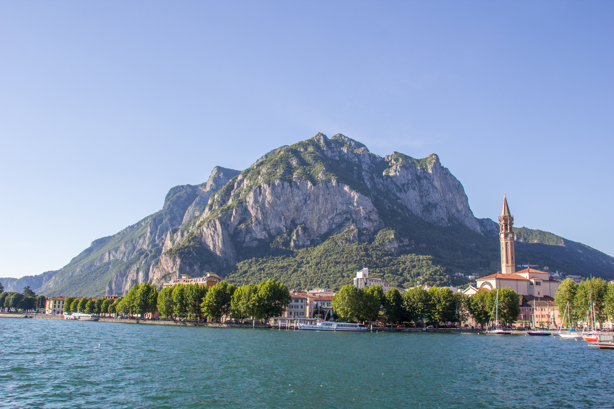
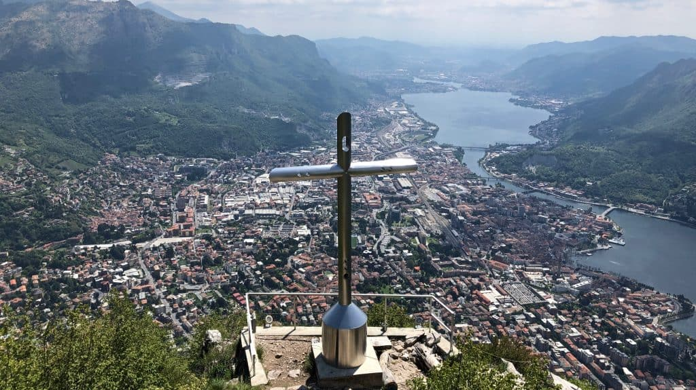

Il Monte San Martino (in lecchese San Martìn) è una montagna del Gruppo delle Grigne nelle Alpi Orobie. Può essere detto la montagna di Lecco. Esso infatti si erge proprio al di sopra del capoluogo lariano raggiungendo i 1.090 metri di quota con una parete verticale che si innalza sopra la città. La maestosità della montagna si deve proprio al fatto che essa si erge quasi verticalmente a partire dai 200 metri di quota, ovvero dal livello del lago.

La splendida vista sul lago di Como dalla cima del San Martino
